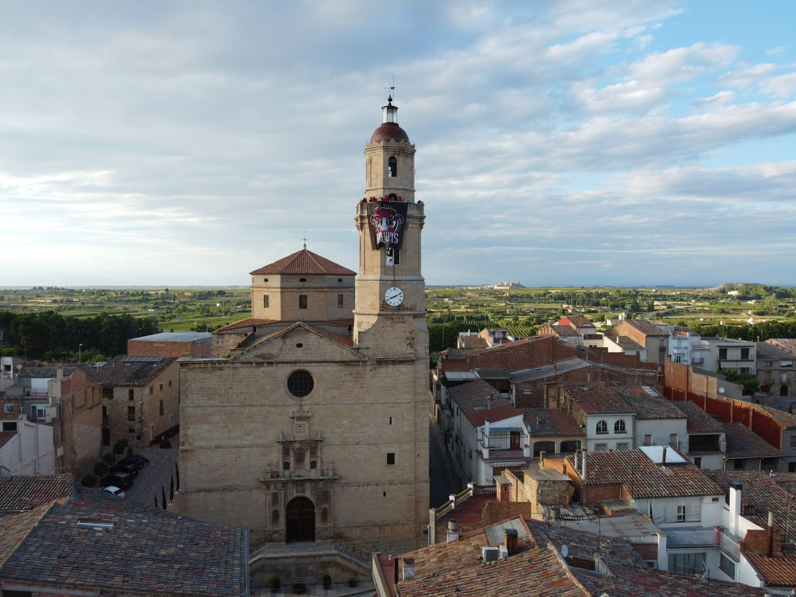
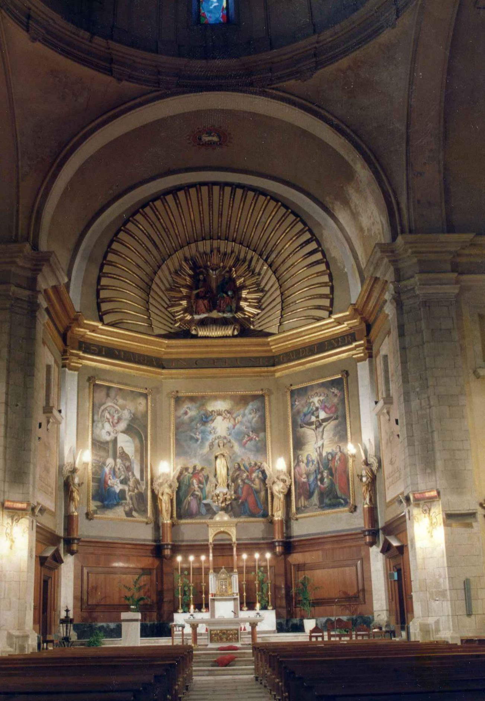

Església de l'Assumpta
Aquesta majestuosa construcció neoclàssica del segle XVIII destaca pel seu imponent campanar vuitavat, visible des de tota la plana d'Urgell. L'interior, d'una gran amplitud, allotja l'esperit de la comunitat que ha crescut al voltant de la plaça porticada, un dels centres neuràlgics de la vida social borgenca.